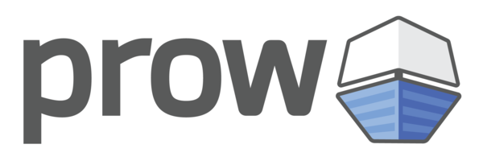

prow

Prow 是基于 Kubernetes 开发的 CI/CD 系统
Jobs 可以由多种类型的事件出发，并且报告状态给不同的服务。
除了 Job 执行外，Prow 还提供了 Github 自动化执行策略，/foo格式的命令的 chat-ops 和自动 PR 合并
Functions and Features
- 用于测试，批处理和产品发布的 Job 运行
- 基于
/foo格式的可扩展 Github bot 命令，强化配置策略和进程 - 带有批量测试的 Github 自动合并
- 用于查看 Job，合并队列状态，动态生成的帮助信息的前端界面
- 基于 SCM 的自动部署
- 在 SCM 中自动管理 Github 的 org/repo
- 专为拥有大量仓库的多组织设计（Prow 只需要一个 Github bot token）
- 在 Kubernetes 上运行带来的高可用性
- JSON 结构日志
- Prometheus metrics
Who use Prow
Prow is used by the following organizations and projects:
- Kubernetes
- This includes kubernetes, kubernetes-client, kubernetes-csi, kubernetes-incubator, and kubernetes-sigs.
- OpenShift
- This includes openshift, openshift-s2i, operator-framework, and some repos in kubernetes-incubator, containers and heketi.
- Istio
- Knative
- Jetstack
- Kyma
- Metal³
- Prometheus
- Caicloud
- Kubeflow
- Azure AKS Engine
- tensorflow/minigo
- helm/charts
- Daisy(google compute image tools)
- KubeEdge (Kubernetes Native Edge Computing Framework)
- Volcano (Kubernetes Native Batch System)
- Loodse
Jenkins X uses Prow as part of Serverless Jenkins.
部署 Prow
创建 Github bot 账号
配置账户的 personal access token
- Must have the
public_repoandrepo:statusscopes - Add the
reposcope if you plan on handing private repos - Add the
admin_org:hookscope if you plan on handling a github org
创建 Github secrets
- 创建
hmac-token用于 Github webhooks 的认证
# openssl rand -hex 20 > /path/to/hook/secret
kubectl create secret generic hmac-token --from-file=hmac=/path/to/hook/secret
- 创建 Github OAuth2 token
# https://github.com/settings/tokens
kubectl create secret generic oauth-token --from-file=oauth=/path/to/oauth/secret
安装prow到集群
kubectl apply -f https://github.com/gsmlg/pipeline/raw/master/updated_prow.yaml
默认会安装到 default namesapce 下，Job 运行在 test-pods namsapces 下
通过命令查看是否安装完成
# kubectl get deployments
NAME READY UP-TO-DATE AVAILABLE AGE
deck 2/2 2 2 21h
hook 2/2 2 2 21h
horologium 1/1 1 1 21h
plank 1/1 1 1 21h
sinker 1/1 1 1 21h
statusreconciler 1/1 1 1 21h
tide 1/1 1 1 21h
配置 ingress
# 查看ingress
kubectl get ingress ing
# 编辑ingress
kubectl edit ingress ing
创建 webhook
配置 ingress，default/ing
设置好 ingress 域名
打开 github repo 的 setting 页面设置 webook，URL 设置为 ingress-domain/hook, secret 为 webook 创建的 secret
这样一个 prow 集群配置完成
添加 plugins
增加 configmap plugins
内容为：
apiVersion: v1
kind: ConfigMap
metadata:
name: plugins
namespace: default
data:
plugins.yaml: |
plugins:
ORG/PROJECT:
- size
会自动在 pull-request 上添加一个 size 标签